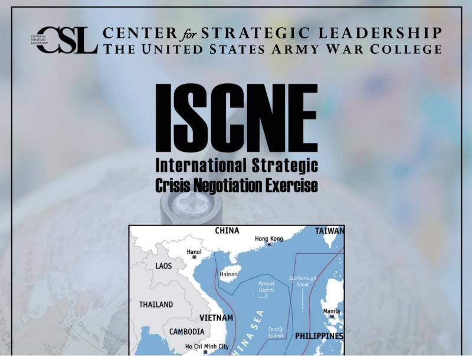

Negotiation, teamwork, strategic planning, relationship management
International strategic crisis negotiation exercise
The International Strategic Crisis Negotiation Exercise (ISCNE) is a focused exercise that sharpens negotiation strategy, team building, and regional understanding. Participants are split into teams representing nations or international groups with competing interests, and try to negotiate a consensus on an unstable situation.
Each delegation has to build a strategy that upholds its government’s positions and achieves its objectives in the region, while maintaining or improving relations with the other nations involved. Delegations then run an extended series of bilateral and multilateral negotiations. The Center for Strategic Leadership at the U.S. Army War College has run the ISCNE series for over 13 years.
